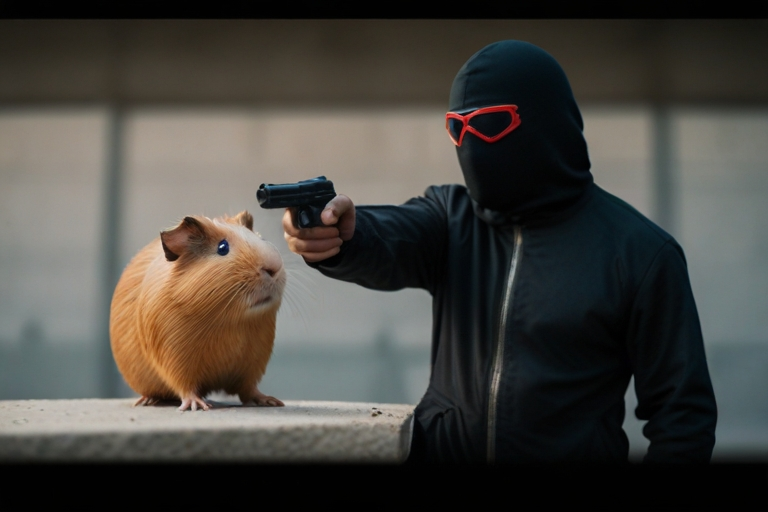

Zpravodajstí RealNews Vám denně přináší relevantní a ověřené informace z celého světa již 78 let. Máme velkou komunitu zpravodajů, věnujících se všem různým oborům – příroda, politika, věda, události ze světa, medvědi a spousta dalších!
Staňte se zpravodajem
Články pro RealNews píší oficiální novináři, psát je ovšem mohou i naši věrní zpravodajové, amatérští volnošasoví novináři pomáhájící nám získávat a zpracovávat informace z celého světa. Nejaktivnější z nich najdete v našem přehledu zpravodajů.
I Vy se můžete stát zpravodajem přináčejícím zprávy pro RealNews! Jak na to? Stačí jen vyplnit několik dotazníků, přečíst si naše podmínky pro komunitu a složit zkoušku. Zkouška se skládá osobně na naší pobočce po předchozí domluvě. Každý zpravodaj musí nechat svůj článek před publikováním projít naším ověřovacím systémem, k němuž dostane přístup po složení zkoušky.
Co frčí?
Níže najdete nejčtenější články za poslední měsíc. Pro otevření článku klikněte na jeho nadpis. Pokud se chcete dočíst více nebo Vás zajímají nejnovější články, podívejte se na záložku Novinky.
Napsali jsme náš první článek!Dnes 5.4.2024 náš tým publikoval první testovací článek na náš web. Následovalo slavnostní přestřižení pásky u nové kanceláře a velká oslava. Na oslavě se ukázaly i známé osobnosti, které můžete znát z českých filmů, kapel nebo poslanecké sněmovny. Přišel i starosta Novinkova, který si žádnou oslavu nenechá ujít. Přechod RealNews na digitální médium byl součástí diskuzí několik posledních let. Co na to odborníci? Dočtete se dále.

Imigranti na Zlínsku brutálně napadli morče důchodkyněVečer 6. 4. 2024 okolo šesté hodiny se na Zlínsku důchodkyni Zdeně ztratilo její milované morče. Našla ho před domem, na zádech mu chyběl chomáč chlupů. O pár domů dále se vzdalovala skupinka lidí z města, za nimi poskakovala jejich kočka.Docent PhDr. Zbyšek Maštálka varuje před řadícími algoritmyV posledních letech zaznamenal obor vývoje řadících algoritmů velký rozmach. Dnes už jsou schopné seřadit velmi efektivně a rychle prakticky cokoli – čísla vzestupně i sestupně, informace podle využití úložiště, zprávy podle data vydání a dokonce i slova podle abecedy! Tento technologický pokrok nám velmi usnadnil život. Odborník Zbyšek Maštálka ovšem varuje, že by se řadící algoritmy mohly vymknout kontrole.3 způsoby jak naložit kyselé okurky, které používali už AustralopitékovéKyselé okurky – někdo je miluje, jiný zas nenávidí. Jedno je ale jisté: jsou nedílnou součástí naší kuchyně. Dávají se k řízku, do bramborového salátu nebo jen jako pochutina na švédský stůl.Medvěd z Popradu vypil bezdomovci Jägermeistera, pak ho lovil v ulicíchpoklad se našel u Prahy konečně ho někdo našel